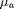
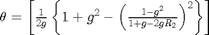
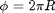
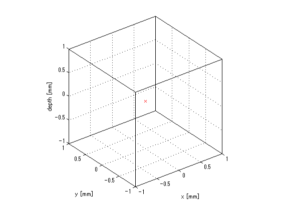
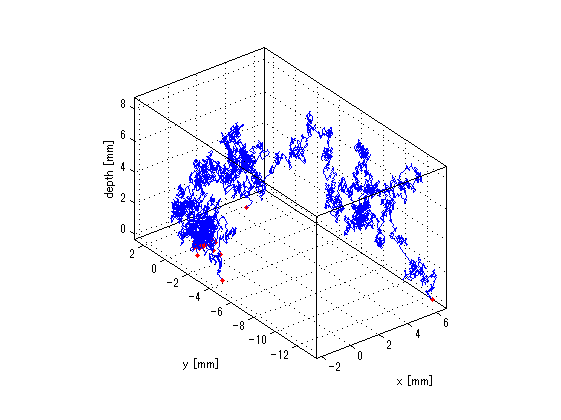

Ray trace
Contents
Ray trace simulation
l[mm]:total light path length
mus[mm-1]:scatter coefficient 
mua[mm-1]:absorption coefficient 
g:anisotropic scatter coefficient (-1 to 1)
L[mm]:light path length in one step
theta[rad]:angle of light path to z axis which is culculated by 
phi[rad]:angle of light path to xy surface, 
W:light intensity
x,y,z and X,Y,Z:cordinate of photon and accumulation of each cordinates
initialization
clear % [xCylinder,yCylinder,zCylinder] = cylinder(70); % hCylinder = surf(xCylinder,yCylinder,zCylinder*50); % alpha(hCylinder,0.3); % hold on; % axis equal; % axis vis3d; plot3(0,0,0,'rx') xlabel('x [mm]'); ylabel('y [mm]'); zlabel('depth [mm]'); axis equal; axis vis3d; grid on; hold on; box on; % %% Define random number % % randShuffle() calls random number % % random number changes on each call % % usage:R1() % progn = @(varargin) varargin{end}; % randShuffle = @() progn(rng('shuffle'),rand()); % % R1 = randShuffle; % R2 = randShuffle; % R3 = randShuffle;
Define const
N = 100; maxZ = zeros(N,1); mus = 15; mua = 1.8; g = 0.9; W0 = 10000;
Monte Carlo simulation
for i = 1:N l = 0; theta = 0; phi = 0; x = 0; y = 0; z = 0; X = 0; Y = 0; Z = 0; W = W0; while z >= 0 && z < 10 && sqrt(x^2+y^2) < 70 %&& W/W0 > 0.005 L = abs(log(rand))/(mua+mus); theta = theta + acos(1/(2*g)*(1+g^2-((1-g^2)/(1+g-2*g*rand))^2)); phi = phi + 2*pi()*rand; l = l + L; x = x + L*cos(theta)*cos(phi); y = y + L*cos(theta)*sin(phi); z = z + L*cos(theta); X = [X,x]; Y = [Y,y]; Z = [Z,z]; W = W*(mus/(mus+mua)); end % max penetration depth maxZ(i) = max(Z); % plot plot3(X,Y,Z); plot3(X(end),Y(end),Z(end),'r.','markersize',5,'linewidth',3); axis equal; axis vis3d; grid on; hold on; box on; end % culiculate mean depth meanZ = mean(maxZ(maxZ<50));